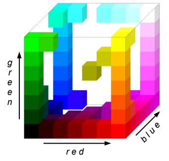
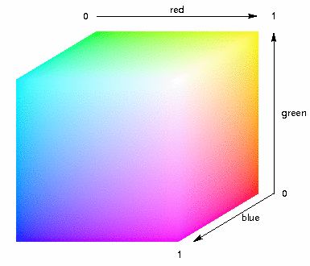
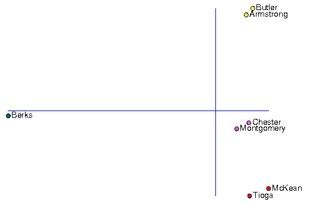
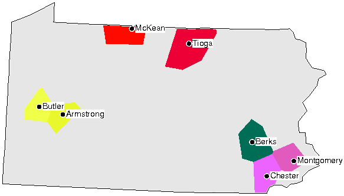
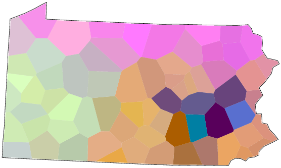

The interpretation of the results of MDS is facilitated if the results can be viewed in relation to geography. This is done using the the RGB color model (Nerbonne, Heeringa and Kleiweg 1999; Leinonen 2010:207-208). By using the three-dimensional RGB color model all positions in the three-dimensional MDS space are translated to a distinct color. The amount of red represents the first dimension of the MDS, the amount of green the second dimension and the amount of blue the third dimension. The following figure shows the three-dimensional color spectrum created by the RGB color model:
 In Gabmap a slightly modified RGB color spectrum is used, which corresponds better to the human color perception (the RGB colors have been translated to HSV, the V is squared and after that the colors are converted back to RGB).
The next plot shows the results of MDS in a two-dimensional plot as before, but in this plot the color of the dot of each dialect has been colored with the RGB colors according to the positions in the three-dimensional MDS analysis. The third dimension corresponds to the z-axis. It can clearly be seen that the color of the dot corresponds to the position in the plot: points close to each other have a similar color.
In order to create a map that visualizes the results of MDS, the area surrounding each site in the map is colored by the color corresponding to the position assigned by MDS. This links the results of MDS to geography. In the map below, the area of each site has the same color as in the previous plot. In this map it is evident that the sites that are linguistically most similar are geographically close to each other, too. Only Berks seems to be an exception from this rule. Geographically Berks is very close to Chester and Montgomery, but it has a drastically different color and is linguistically very different.
In the small example with only seven sites the dialects form four clear groups that are linguistically different from each other. The ability of MDS to display gradual dialectal variation becomes more evident when working with a larger data set. The following map is based on MDS of the linguistic distances between 67 counties in Pennsylvania. In this map there are gradual transitions between dialects as well as some more abrupt dialect borders.
